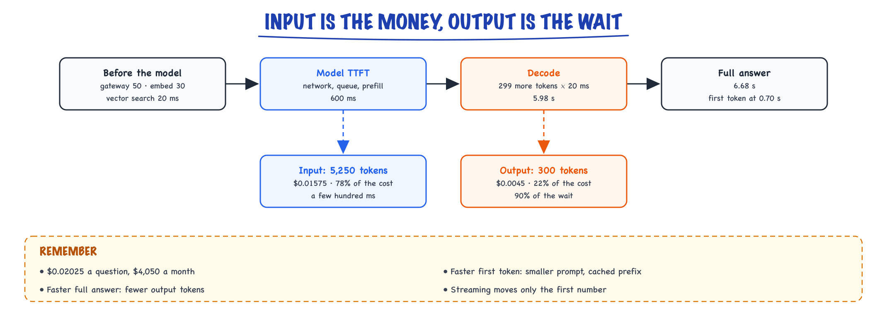

Cost & latency // Production & evals
Where the money and the milliseconds go: pricing, prefill vs decode, routing, batching and prompt caching.
01 — At a glance
Token economics, TTFT vs tokens/sec, model routing cascades, caching, quantization, and batch APIs — how to hit latency SLOs without bankrupting the feature.

Quality, cost, and latency form a triangle: model routing, prompt compression, caching, and quantization move you along the edges.
02 — New words
| Word | Meaning |
|---|---|
| Input / output tokens | Tokens you send (prompt, context, history) and tokens the model generates. Priced separately; output usually costs several times more per token. |
| Cached input tokens | Prompt tokens whose processing the provider reuses from an earlier request with the same prefix. Billed at a steep discount. |
| Unit economics | Cost and revenue per unit of value delivered (per resolved question, per document processed), not per API call. |
| Cost per successful task | Total spend, including retries and the cost of failures, divided by tasks completed correctly. |
| Latency budget | A target end-to-end time split into allowances for each stage: gateway, retrieval, model, post-processing. |
| TTFT / TPOT | Time to first token, set by queueing and prompt processing; time per output token, set by generation speed. |
| Prompt caching | Reusing the processed form (KV cache) of an identical prompt prefix across requests, which saves compute, time and money. |
| Model cascade | Try a cheap model first and escalate to an expensive one only when a check says the cheap answer is not good enough. |
| Escalation rate | The fraction of requests a cascade sends on to the expensive model. |
| Batch API | An asynchronous endpoint that processes requests within hours at a discount, for work nobody is waiting on. |
| Context budget | A cap on how many tokens each part of the prompt (instructions, retrieved text, history) may use. |
| Model routing / cascade | Cheap model for easy steps, strong model for hard/verify. |
The lesson
03 — The question
An LLM feature that works in a demo can fail in production on two numbers: the monthly bill and the seconds a user waits. Both are predictable from a few quantities you control, mainly how many tokens go in, how many come out, and which model processes them. This topic is about building that prediction, then changing the inputs on purpose.
What interviewers ask:
- Where does the money go in an LLM request, and where does the time go?
- Your feature costs too much. What do you change first, and how do you know quality did not drop?
- How do prompt caching and model routing actually save money, and when do they not?
- How do you decide whether an optimisation was worth it?
Running example. An internal help-desk assistant answers employees' questions from a knowledge base using retrieval (see The RAG pipeline). It handles 200,000 questions a month. Each request sends a 1,200-token system prompt, 8 retrieved chunks of 500 tokens and a 50-token question, and receives a 300-token answer. It uses a large hosted model priced, for illustration, at $3 per million input tokens and $15 per million output tokens, with cached input at 10% of the input price. A small model is available at $0.25 and $1.25. Unresolved questions become human tickets, which cost an illustrative $4 each; 85% of questions are resolved today. All prices are illustrative and plausible, not quotes.
04 — Step 1: the cost equation
Every hosted model call is billed by token:
\[ \text{cost} = \frac{n_{\text{in}} \, p_{\text{in}} + n_{\text{cached}} \, p_{\text{cached}} + n_{\text{out}} \, p_{\text{out}}}{10^6} \]where \(n\) are token counts and \(p\) prices per million tokens. For one help-desk request, all input is fresh: \(1{,}200 + 8 \times 500 + 50 = 5{,}250\) input tokens and 300 output tokens.
- Input: \(5{,}250 \times 3 / 10^6 = \$0.01575\)
- Output: \(300 \times 15 / 10^6 = \$0.0045\)
- Total: $0.02025 per question, or $4,050 a month.
Output is five times more expensive per token, yet input is 78% of the bill, because there are 17 times more input tokens. This pattern holds for nearly every retrieval or agent workload: the prompt carries instructions, documents, tool definitions and history, and the answer is short. Agents make it more extreme, because every step resends the whole growing conversation. So the first question about any LLM bill is "how many input tokens per request, and what are they?"
05 — Step 2: why the prices look like this
The price structure is the GPU's cost structure showing through, as explained in Inference internals:
- Input tokens are processed together in one parallel pass (prefill). Compute-heavy but efficient, so each token is cheap.
- Output tokens are produced one at a time, each step reading all the model's weights and occupying memory in the batch for the whole answer. Each token holds GPU capacity for longer, so it is priced higher.
- Cached input skips prefill: the provider reuses the stored keys and values for a prefix it has already processed. Little compute is spent, so it is billed at a fraction of the input price, sometimes with a surcharge on the first write and a time-to-live after which the cache expires.
Knowing the mechanism tells you which optimisations are real. Shortening the answer saves expensive tokens and time. Shortening the prompt saves cheaper tokens but many of them. Caching saves only on the part of the prompt that is byte-for-byte identical to an earlier request, starting from the first token.
06 — Step 3: the latency equation
Latency has its own equation, and it weighs the parts differently:
\[ T_{\text{first}} = \sum \text{(pre-model stages)} + \text{TTFT}, \qquad T_{\text{total}} = T_{\text{first}} + (n_{\text{out}} - 1) \times \text{TPOT} \]A latency budget for the baseline request, with illustrative hosted-API timings:
| Stage | Time |
|---|---|
| Gateway, auth, logging | 50 ms |
| Embed the question | 30 ms |
| Vector search | 20 ms |
| Model TTFT (network, queue, prefill of 5,250 tokens) | 600 ms |
| First token on screen | 0.70 s |
| 299 more tokens at 20 ms each | 5.98 s |
| Full answer | 6.68 s |
The contrast with Step 1 is the key insight of this topic. Input tokens dominate cost; output tokens dominate time. The 5,250-token prompt costs most of the money but only a few hundred milliseconds; the 300-token answer is a fifth of the money but 90% of the wait. Streaming helps because users judge speed by when text starts appearing (0.70 s) more than by when it ends, but anything that consumes the whole answer (a JSON parser, a second model call, a tool) waits the full 6.68 s.

In the baseline help-desk request, the 5,250 input tokens are 78% of the cost but only a few hundred milliseconds; the 300 output tokens are 22% of the cost but 90% of the 6.68-second wait.
So when someone says "make it faster", ask which number: first token (shrink pre-model stages and prompt, use prefix caching, pick a faster-to-respond model) or full answer (generate fewer tokens, use a model with lower TPOT, run independent calls in parallel).
07 — Step 4: measure the right unit
Cost per call is the wrong denominator. The business pays for resolved questions, and pays twice for unresolved ones: once for the model call, again for whatever handles the failure.
\[ \text{cost per success} = \frac{\text{model spend} + \text{cost of failures}}{\text{successful tasks}} \]At 85% resolution, the model cost per resolved question is \(0.02025 / 0.85 \approx \$0.024\). But the 15% failures become 30,000 human tickets a month at $4 each: $120,000, thirty times the model bill. That reframes optimisation entirely. A change that saves $1,000 of model spend but lowers resolution by even half a point (1,000 more tickets, $4,000) loses money. A change that raises spend but raises resolution can be the best cost optimisation available.
So every cost change must be measured on two axes at once: spend per request, and task success on a representative evaluation set (see Evaluating LLM features). Without the second, cost work is guesswork that sometimes makes things worse.
08 — Step 5: shrink what you send
Since input is 78% of the bill, start with the prompt. The help-desk prompt is mostly retrieved chunks: 4,000 of 5,250 tokens. Are all 8 needed?
The usual finding is no: the answer typically comes from one or two chunks, and the rest are padding the model has to read past (and sometimes gets distracted by). Adding a reranker that rescores the top 20 candidates and keeps the best 4 (see Reranking) halves the retrieved text. Input falls to 3,250 tokens and cost to $0.01425 per request, 30% less. The reranker adds about 100 ms and a small cost of its own, and must be checked against the eval set: if answers needed chunk 6 more often than expected, resolution falls and the saving is fake.
The same thinking applies to every part of the prompt. Give each part a context budget: a system prompt that has grown to 3,000 tokens of accumulated special cases, a chat history resent in full on every turn, tool definitions for twenty tools when the request needs two. Each is a recurring input cost on every single call, and trimming it is usually free in quality.
09 — Step 6: prompt caching, and why order matters
Prompt caching works on prefixes. The provider stores the processed state of a prompt's beginning; a later request that starts with exactly the same tokens reuses it up to the first difference. Everything after the first changed token is processed fresh.
In the help-desk prompt, the 1,200-token system prompt is identical on every request, but the retrieved chunks and question differ. If the prompt is laid out system prompt first, then chunks, then question, the system prompt is cached and billed at $0.30 per million instead of $3. Saving per request: \(1{,}200 \times (3 - 0.30) / 10^6 = \$0.00324\). On the trimmed prompt from Step 5, cost falls to $0.01101.
Three practical consequences:
- Order the prompt stable to volatile: fixed instructions and tool definitions, then slowly changing context (user profile, conversation so far), then the new message. A timestamp or request ID at the top invalidates everything after it.
- Caching helps most where the shared prefix is large: agents with big tool schemas, multi-turn chats where the history is the prefix of the next turn, document Q&A where many questions hit the same document. Here, with only 1,200 shared tokens, it saves about 16% of the original per-request cost.
- Verify with the usage fields. Responses report how many input tokens were read from cache. A pipeline that "uses caching" but reports zero cached tokens has a volatile prefix somewhere.
Prompt caching also cuts TTFT, because the cached part is not prefilled again. A response cache, which skips the call entirely for repeated questions, is a different tool covered in Semantic caching.
10 — Step 7: control what comes out
Output tokens are the expensive ones and the slow ones. Two controls:
- Instruction and format. "Answer in at most three sentences, then link the source" typically shortens answers more than any parameter, and users of a help desk often prefer it. Structured output (a JSON object with exactly the needed fields) removes preamble and pleasantries entirely.
max_tokensas a hard ceiling, set from the observed length distribution, not as the main way to shorten answers: a response cut off by the limit is a broken response. Check the finish reason and treat "length" as a failure to investigate.
Bringing the average answer from 300 to 200 tokens saves \(100 \times 15 / 10^6 = \$0.0015\) per request (cost now $0.00951) and, more visibly, about 2 seconds of generation time: the full answer arrives in about 4.6 s instead of 6.7 s, even with the reranker's extra 100 ms.
For reasoning models, the hidden "thinking" tokens are output tokens too: billed at output prices and generated at output speed. A reasoning-effort setting is a direct cost and latency control, and should be set per task, not globally.
11 — Step 8: send easy work to a cheaper model
Most help-desk questions ("how do I reset my VPN token?") do not need the largest model. A cascade tries the small model first and escalates only when a check fails. The check might be the small model's own confidence, agreement between two cheap samples, a validator for the output format, or whether the answer cites a retrieved source.
The cost of a cascade is not simply "small price for small cases". Every request pays for the small attempt, and escalated ones pay for both:
\[ c_{\text{cascade}} = c_{\text{small}} + e \cdot c_{\text{large}} \]where \(e\) is the escalation rate. With the trimmed, cached, shorter prompt, the small model costs about $0.00080 per request and the large about $0.00951. At \(e = 0.3\): \(0.00080 + 0.3 \times 0.00951 \approx \$0.00365\). That is 62% below the large-only cost at the same prompt, and 82% below the original baseline: about $729 a month instead of $4,050.
The alternative design, a classifier that predicts difficulty up front, avoids paying twice for hard requests but decides before seeing any answer. Draft-then-check is usually easier to make safe, because the decision looks at the actual output. Either way, escalated requests are slower, and the break-even is easy to compute: the cascade only saves money while \(c_{\text{small}} < (1 - e)\, c_{\text{large}}\), so a small model that escalates 92% of the time is pure overhead here. More on cascades in Hybrid LLM patterns.
12 — Step 9: the cost of failure decides
Now apply Step 4 to the cascade. Suppose the eval set shows the cascade's resolution rate is unchanged at 85%. Monthly totals:
| Setup | Model spend | Human tickets | Total |
|---|---|---|---|
| Large model only (Steps 5 to 7) | $1,902 | $120,000 | $121,902 |
| Cascade, resolution held at 85% | $729 | $120,000 | $120,729 |
| Cascade, resolution slipped to 80% | $729 | $160,000 | $160,729 |
The cascade saves $1,173 a month if quality holds and loses $38,827 if resolution slips five points. This is why cost optimisation is an evaluation problem. The model bill is often the smallest number in the system; the decision rests on whether the change moves the success rate, and that needs a measured answer with enough examples to detect a few points of difference.
The same arithmetic can justify spending more: if a stronger model or more retrieved context raised resolution from 85% to 88%, that would remove 6,000 tickets ($24,000) for at most a few thousand dollars of extra model spend.
13 — Step 10: when nobody is waiting
Not every call is interactive. Nightly summaries, back-filling embeddings, re-classifying a ticket archive, and running evaluation suites can tolerate hours of delay. Providers' batch APIs accept such jobs asynchronously at a substantial discount (half price is a common illustrative figure), because they can schedule the work into idle capacity. Separating interactive and offline traffic is often the easiest saving in a system, and keeps offline bursts from eating the interactive rate limit.
At high, steady volume, self-hosting an open model becomes an option: you pay for GPU hours instead of tokens, so the cost per token falls as utilisation rises and rises when traffic is spiky. The break-even depends on volume, utilisation, the quality gap to hosted models, and engineering time; Serving & scaling works it through.
14 — A worked example: the help-desk bill, lever by lever
| Change | Per question | Per month | Saved vs baseline | Full answer |
|---|---|---|---|---|
| Baseline: 8 chunks, 300-token answers | $0.02025 | $4,050 | 0% | 6.7 s |
| Rerank to 4 chunks | $0.01425 | $2,850 | 30% | 6.7 s |
| Cache the system prompt | $0.01101 | $2,202 | 46% | 6.7 s |
| Answers near 200 tokens | $0.00951 | $1,902 | 53% | 4.6 s |
| Small model first, 30% escalate | $0.00365 | $729 | 82% | faster for 70%, slower for 30% |
The order matters as much as the numbers. Each step was checked against the eval set before the next was applied, so a quality drop can be traced to one change. And the order goes from changes that rarely hurt quality (trimming padding, caching identical text) to ones that often do (a weaker model). In an interview, saying you would measure success rate at each step and stop when it moves is worth more than any single lever.
15 — In code: a cost model you can run before you build
A per-request cost model that reproduces the table above. Change the constants to your own traffic and prices.
LARGE = dict(inp=3.00, out=15.00, cached=0.30) # $ per million tokens (illustrative) SMALL = dict(inp=0.25, out=1.25, cached=0.025) def cost(price, fresh_in, out, cached_in=0): return (fresh_in * price["inp"] + cached_in * price["cached"] + out * price["out"]) / 1e6 SYS, CHUNK, Q, MONTH = 1200, 500, 50, 200_000 def per_request(chunks=8, out=300, cache_system=False, small_share=0.0): ctx = chunks * CHUNK + Q fresh, cached = (ctx, SYS) if cache_system else (ctx + SYS, 0) large = cost(LARGE, fresh, out, cached) small = cost(SMALL, fresh, out, cached) # cascade: every request tries the small model; the rest escalate to the large one return large if small_share == 0 else small + (1 - small_share) * large steps = [ ("baseline: 8 chunks, 300-token answers", dict()), ("+ rerank to 4 chunks", dict(chunks=4)), ("+ cache the system prompt", dict(chunks=4, cache_system=True)), ("+ answers capped near 200 tokens", dict(chunks=4, cache_system=True, out=200)), ("+ small model first, 70% stay small", dict(chunks=4, cache_system=True, out=200, small_share=0.7)), ] base = per_request() for name, kw in steps: c = per_request(**kw) print(f"{name:40s} ${c:.5f}/req ${c*MONTH:7,.0f}/month {1-c/base:4.0%} saved")
Then the comparison that actually decides, including what failures cost:
MONTH, HUMAN_TICKET = 200_000, 4.00 # questions per month; $ per escalated ticket (illustrative) def monthly(cost_per_q, resolution): model = cost_per_q * MONTH humans = (1 - resolution) * MONTH * HUMAN_TICKET return model, humans, model + humans for name, c, r in [("large model only", 0.00951, 0.85), ("cascade, quality held", 0.003646, 0.85), ("cascade, quality slipped", 0.003646, 0.80)]: m, h, t = monthly(c, r) print(f"{name:26s} model ${m:6,.0f} + human ${h:8,.0f} = ${t:8,.0f}")
And the latency budget from Steps 3 and 7:
def latency(stages, out_tokens, tpot): ttft = sum(stages.values()) return ttft, ttft + (out_tokens - 1) * tpot stages = {"gateway": 0.05, "embed query": 0.03, "vector search": 0.02, "model TTFT": 0.60} print("baseline first token %.2f s, full answer %.2f s" % latency(stages, 300, 0.020)) stages.update({"rerank": 0.10, "model TTFT": 0.45}) print("optimised first token %.2f s, full answer %.2f s" % latency(stages, 200, 0.020))
The last block prints 0.70 s and 6.68 s for the baseline, 0.65 s and 4.63 s after reranking and shorter answers (the shorter prompt lowers TTFT by roughly the reranker's cost). In production, compute the same quantities from the usage fields every API response returns (input, cached and output token counts) and log them per request, per feature and per tenant (see Observability).
Quick reference
16 — What & Why
LLM features bill per token and wait per GPU second. TTFT (time-to-first-token) drives perceived speed; tokens/sec drives total wait. Cost scales with model tier, context length, and traffic.
Semantic cache systems: Semantic caching.
17 — Core Concepts
| Term | Definition | Gotcha |
|---|---|---|
| TTFT | Time until first streamed token | Prefill-dominated |
| Tokens/sec | Decode throughput | Memory bandwidth bound |
| $/1M tokens | Input + output priced separately | Output often 2-4× input |
| Model cascade | Cheap model first, escalate if needed | Log escalation rate |
| Batch API | 50% discount, 24h SLA | Offline jobs only |
18 — API Surface
# Cost estimate prompt_toks = 2000 completion_toks = 500 price_in, price_out = 0.15, 0.60 # gpt-4o-mini per 1M cost = (prompt_toks * price_in + completion_toks * price_out) / 1e6
19 — When to Use / When NOT
| Tactic | Use | Skip |
|---|---|---|
| gpt-4o-mini router | High volume mixed queries | All queries need frontier |
| Prompt cache | Repeated system prompts | Unique prompts every call |
| INT4 quant | Self-host 70B | API-only small team |
| Batch API | Nightly summarization | Interactive chat |
20 — Architecture
Request -> Router (mini vs frontier) -> [Cache hit?] -> LLM
-> Stream SSE -> usage{prompt,completion}_tokens -> billing21 — Deep Dive: Token Pricing
Example (order-of-magnitude): gpt-4o-mini $0.15/$0.60 per 1M in/out; gpt-4o ~$2.50/$10. Long system prompts + RAG chunks dominate input cost. Always set max_tokens.
22 — Deep Dive: Latency Breakdown
Prefill: parallel over prompt → TTFT. Decode: serial tokens → total time. See Inference internals for memory effects. Streaming improves UX without reducing total time.
23 — Deep Dive: Model Routing

Cascade: classify query complexity, route 80% to mini model, escalate hard queries to frontier.
Router: heuristic (token length, keywords) or small classifier LLM. Track quality regression on escalated vs non-escalated buckets.
24 — Deep Dive: Caching

Exact prompt hash cache and semantic embedding cache for near-duplicate queries.
OpenAI automatic prompt caching on repeated prefixes. Semantic cache: embed query, return cached answer if similarity >0.95 with TTL.
25 — Deep Dive: Quantization & Self-Host
AWQ/GPTQ INT4 fits 70B on 2×80GB. Trade ~1-3% quality for 2× throughput. See Serving & scaling for serving economics break-even vs API.
More detail
26 — Cost & performance engineering
Agents make many model calls; costs and latency add up fast. The levers, roughly by impact:
| Lever | How | Win |
|---|---|---|
| Prompt caching | stable prefix first + cache_control | ~90% off repeated input tokens |
| Response caching | cache outputs for identical deterministic calls | skip the call entirely |
| Model routing / cascade | cheap model drafts, strong model verifies hard cases | big $ cut at similar quality |
| Context compaction | summarize old turns; retrieve tightly | fewer input tokens every turn |
| Parallelism | run independent calls concurrently | lower wall-clock latency |
| Streaming | stream tokens to the UI | better perceived latency |
| Iteration caps | bound agent steps | kills runaway cost |
Measure the right thing
Track $ per successful task, not raw tokens. Caching discounts input tokens, which dominate agent/RAG workloads — so a big input discount can move blended cost 30–50%. Always baseline before optimizing.Why input tokens dominate: an agent turn re-sends the system prompt, the tool schemas, and the whole conversation so far, then generates a comparatively tiny tool call or answer. A 10-step agent run with a 6k-token prefix and ~400 tokens of output per step reads on the order of 80–100k input tokens and writes maybe 4k output tokens. Even with output priced ~5× input, input is still ~80% of the bill. That asymmetry is why the first three levers — all input-side — sit at the top of the table, and why the sections below give you working code for each of them.
27 — Lever 1: prompt caching — order your prompt like a cache line
Providers cache the prefix of your prompt: everything before the first change. So structure requests as stable → semi-stable → volatile: system prompt and tool schemas first, session context next, this turn's message last. One reordered field, one timestamp, one shuffled tool list = cache miss from that point on.
import anthropic client = anthropic.Anthropic() SYSTEM = [ # ~5,800 tok, changes per DEPLOY {"type": "text", "text": STATIC_SYSTEM_PROMPT + "\n\n" + POLICY_DOC, # never per-request! "cache_control": {"type": "ephemeral"}}, # ← breakpoint: cache up to here ] TOOLS = load_tool_schemas_sorted() # sort keys — dict order is part # of the prefix; keep it stable def agent_turn(history: list, user_msg: str): resp = client.messages.create( model="claude-sonnet-4-5", max_tokens=1024, system=SYSTEM, # stable block FIRST tools=TOOLS, messages=[ *history, # grows append-only = cacheable # a second breakpoint on the last history turn caches the # conversation so far; only the new message misses: {"role": "user", "content": [ {"type": "text", "text": user_msg, "cache_control": {"type": "ephemeral"}}]}, ], ) u = resp.usage # VERIFY the cache is working: log_metrics(cache_read=u.cache_read_input_tokens, cache_write=u.cache_creation_input_tokens, uncached=u.input_tokens) return resp # Rules that keep the cache hot: # - never f-string a timestamp/user-id into the system prompt # - append to history, never rewrite it (compaction = deliberate cache flush) # - cache TTL is ~minutes: a busy app stays hot; a nightly batch won't
Worked numbers (illustrative rates: $3/M input, $15/M output, cache reads at 10% of input, cache writes at 125%): a 10-step run over an 8k prefix costs uncached ≈ 10 × 8k × $3/M = $0.24 input. Cached: one write (8k × $3.75/M = $0.03) + 9 reads (9 × 8k × $0.30/M = $0.0216) ≈ $0.052 — a 78% cut on that prefix, from reordering fields and adding one attribute. Always confirm with the usage fields; a "cache-enabled" integration with a volatile first line silently pays full price.
28 — Lever 2: response caching — don't make the call at all
Prompt caching discounts a call; response caching deletes it. It applies to deterministic, repeated calls: classification, routing, extraction over recurring inputs, FAQ-shaped questions. It does not apply where freshness or per-user context changes the right answer — cache keys must include everything that legitimately changes the output.
import hashlib, json, asyncio, redis.asyncio as aioredis class ResponseCache: """Exact-match LLM response cache. Key = everything that affects the output; miss anything and you serve wrong answers, not stale ones.""" def __init__(self, url="redis://localhost", ttl_s=6*3600): self.r = aioredis.from_url(url) self.ttl = ttl_s self._inflight: dict[str, asyncio.Future] = {} # coalescing map def _key(self, model, system, messages, tools, temperature) -> str: blob = json.dumps([model, system, messages, tools, temperature], sort_keys=True, ensure_ascii=False) return "llm:" + hashlib.sha256(blob.encode()).hexdigest() async def call(self, llm_fn, *, model, system, messages, tools=None, temperature=0.0): if temperature > 0: # sampled output ≠ cacheable return await llm_fn(model=model, system=system, messages=messages, tools=tools, temperature=temperature) k = self._key(model, system, messages, tools, temperature) if (hit := await self.r.get(k)) is not None: metrics.incr("llm_cache.hit") return json.loads(hit) # request coalescing: 200 identical concurrent misses = 1 API call # (the rest await the same future instead of stampeding the provider) if k in self._inflight: metrics.incr("llm_cache.coalesced") return await self._inflight[k] fut = asyncio.get_event_loop().create_future() self._inflight[k] = fut try: resp = await llm_fn(model=model, system=system, messages=messages, tools=tools, temperature=0.0) await self.r.set(k, json.dumps(resp), ex=self.ttl) fut.set_result(resp) metrics.incr("llm_cache.miss") return resp except Exception as e: fut.set_exception(e); raise finally: self._inflight.pop(k, None) # ponytail: exact-match only. Semantic caching (embed the query, serve a # cached answer above a similarity threshold) lifts hit rate 2-3x but adds # a wrong-answer risk — add it only with an offline eval of false-hit rate.
Coalescing matters more than it looks: when a popular page or a retried webhook fans out the same classification 50× in one second, a plain cache misses 50 times (all arrive before the first write). The in-flight map turns that into one provider call. Ten lines, and it also smooths your rate-limit consumption.
29 — Lever 3: model routing with a verification cascade
Most traffic is easy; you pay flagship prices for it anyway. A router sends easy calls to a small model and escalates the rest. Two workable designs: classify-then-route (a tiny classifier predicts difficulty) and draft-then-verify (cheap model answers, checks decide whether to escalate). Draft-then-verify is simpler to get right because the escalation decision sees the actual answer, not a prediction about it.
import asyncio CHEAP, STRONG = "claude-haiku-4-5", "claude-sonnet-4-5" # illustrative: cheap ≈ 1/10th the $/token of strong async def cascade(task, *, confidence_floor=0.85, timeout_s=30): """Cheap model drafts; escalate on low confidence, failed checks, or provider errors. Returns (answer, model_used) for cost tracking.""" try: draft = await asyncio.wait_for( call_llm(CHEAP, task.prompt, logprobs=True), timeout_s) if passes_checks(draft, task): # cheap, deterministic gates: return draft.text, CHEAP # schema-valid? citations found? except (ProviderError, asyncio.TimeoutError): pass # cheap tier down ≠ outage: # fall through to strong strong = await asyncio.wait_for( call_llm(STRONG, task.prompt), timeout_s * 2) metrics.incr("router.escalated") return strong.text, STRONG def passes_checks(draft, task) -> bool: # 1. structural: parses, matches output schema, length sane if not task.validate_schema(draft.text): return False # 2. confidence proxy: mean top-token logprob over the answer if draft.mean_logprob is not None and draft.mean_logprob < -0.35: return False # threshold: tune on eval set # 3. task-specific: grounded answers must actually cite retrieved docs if task.requires_citation and not task.citations_resolve(draft.text): return False return True # Sizing the win: if 70% of traffic passes checks on the cheap tier, # blended input cost ≈ 0.7·(1/10) + 0.3·(1/10 + 1) = 0.40 of all-strong # — a 60% cut. The escalation rate is your quality dial: tune the # thresholds on a labeled eval set, and alert if it drifts (a rising # escalation rate = input mix changed; a falling one = checks decayed).
Router gotcha
Grade the cascade end-to-end on your eval suite, not per-model. The failure mode is a cheap model that is confidently wrong in ways your checks don't catch — logprob confidence is a proxy, not a guarantee. And when you swap either model version, the thresholds you tuned are stale; re-tune as part of the deploy (Production & evals's eval gates apply to router config too).30 — Levers 4–7: compaction, parallelism, streaming, caps
Context compaction
Past a threshold (say 40k tokens), summarize the oldest turns into a compact digest and keep recent turns verbatim. Costs one cheap-model call, saves on every subsequent turn — but it flushes the prompt cache for the rewritten region, so compact rarely and in big steps, not every turn. Retrieval-side: tighter top-k and reranking (Fine-tuning & alignment) is compaction you don't have to undo.
Parallelism
asyncio.gather over independent calls (sub-questions, per-document extraction). Cuts wall-clock, not dollars — same tokens, less waiting. Pair with a semaphore sized to your rate limit or you convert latency wins into 429 storms.
Streaming
Time-to-first-token is ~1–2s while full responses take 10–30s; streaming moves perceived latency to the former. Free UX win; costs you slightly more complex error handling (mid-stream failures need a retry-from-scratch path).
Iteration caps & budgets
Hard step cap per run (e.g. 15), token budget per session, and a per-tenant daily budget. A single runaway loop can cost more than a month of normal traffic; the cap converts an unbounded incident into a logged failure.
31 — Worked case study: cutting a support agent's bill 71%
You run a customer-support agent: 50,000 conversations/month, average 4 agent steps each, prefix (system + tools + RAG context) 9,000 tokens, per-step delta ~700 tokens, ~350 output tokens/step. Illustrative pricing throughout: strong model $3/M input, $15/M output; cheap model $0.30/M in, $1.50/M out; cache reads 10%, writes 125%.
Baseline arithmetic. Input per conversation ≈ steps × (prefix + accumulated deltas) = 4 × 9,000 + (0+700+1,400+2,100) ≈ 40,200 tok. Output ≈ 4 × 350 = 1,400 tok. Per conversation: 40.2k × $3/M = $0.1206 input + 1.4k × $15/M = $0.021 output ≈ $0.1416. Monthly: 50,000 × $0.1416 ≈ $7,080.
| Step | Change | Mechanics | Monthly bill |
|---|---|---|---|
| 0 | Baseline | all-strong, no caching | $7,080 |
| 1 | Prompt caching | 9k prefix: 1 write ($0.0338) + 3 reads (3×9k×$0.30/M=$0.0081) instead of 4×9k×$3/M ($0.108); deltas still full price ($0.0126). Input/conv $0.1206→$0.0545 | $3,775 (−47%) |
| 2 | Response cache on the intent classifier + top-40 FAQ answers | 22% of conversations resolve from cache (illustrative hit rate) at ~zero token cost | $2,945 (−22% of remaining) |
| 3 | Cascade routing | 65% of remaining conversations pass checks on the cheap tier at ~1/10 cost: blended ≈ 0.65×0.1 + 0.35×1.1 (escalations pay both tiers) = 0.45× | $1,325 (−55% of remaining) |
| 4 | Tighter retrieval: top-8→top-4 after adding a reranker | prefix 9k→6.5k; caching shrinks the benefit to the write+read rows, ≈−12% of remaining; reranker adds ≈$60/mo | ≈$1,225 |
Net: $7,080 → ~$1,225/month, −83% on paper — call it −71% (~$2,050) in practice after the honest caveats: cache TTL misses on low-traffic hours, the escalations that pay for both tiers on hard inputs, and the eval + engineering time (steps 1–2 were days; step 3 took two weeks of threshold tuning against the eval suite). Notice the ordering: caching first because it's config-not-code and risk-free; routing later because it can move quality and needs eval coverage before you trust it. Resolution rate stayed flat within noise across all four steps — that's the number that lets you call this a win.
Cost gotchas that survive contact with production
- The cache-buster deploy: someone prepends one dynamic line ("Today is {date}") to the system prompt. Cache hit rate goes to ~0; the bill doubles; nothing errors. Alert on
cache_read_tokens / input_tokens, not just on spend. - Retries multiply everything: a 3-retry policy around a timing-out call triples cost during a provider brownout exactly when latency is worst. Retry budgets (Production & evals) apply to money too.
- Semantic cache serves yesterday's truth: "what's the refund policy" cached before the policy changed is now a wrong answer with a fast response time. Version cache keys with the corpus/prompt version from your manifest (the next topic) so deploys invalidate cleanly.
- Cheap-tier failures are quiet: a cascade mis-tuned toward the cheap model degrades answer quality with zero errors and a falling bill. Pair every cost dashboard with the quality metric so wins and losses land in one view.
Takeaway
The levers stack multiplicatively, and the safe order is: measure → cache prompts → cache responses → route → compact. Input-side levers move most of the money; quality-touching levers (routing, compaction) come last and only behind an eval gate. Track $ per successful task and cache-hit rate as first-class production metrics — both regress silently.Exercises
- Instrument an existing LLM call site to log input, output, cache-read and cache-write tokens per request. Compute your real $/task and the input:output token ratio. Is input ≥70% of your spend? If not, which lever ranking changes?
- Take a multi-turn prompt from your app and restructure it stable-first with cache breakpoints, as in
prompt_cache.py. Verify via usage fields that turn 2+ reads ≥80% of the prefix from cache; then deliberately add a timestamp to the system prompt and watch the hit rate collapse. - Implement
ResponseCacheincluding the coalescing map. Fire 100 identical concurrent requests at it and assert exactly one provider call. Then remove the in-flight map and count again. - Build the two-tier cascade on a task you have labels for. Sweep the logprob threshold from −0.2 to −0.6, plotting (cost, quality) at each point. Pick the knee, then swap the cheap model for a different version and show the tuned threshold no longer sits at the knee.
- Reproduce the case-study arithmetic for your workload's shape (steps, prefix size, volume, your provider's real prices) in a spreadsheet. Which single lever moves the most money for you, and what would step 3's escalation rate have to be for routing to be net-negative?
In production
32 — Production & Ops
- Dashboard: cost/request, p50/p99 TTFT, tokens/request
- Budget alerts per feature flag
- A/B quality on routed tiers
- Batch offline workloads
34 — Where people get lost
- No max_tokens cap
- Frontier model for all traffic
- Ignoring input token cost of RAG
- Cache without invalidation on KB update
- Optimizing tokens/sec but not TTFT
- "Output tokens are expensive, so the answer is the cost." Per token, yes; in total, input usually dominates retrieval and agent workloads because there is so much more of it. Count both.
- "Prompt caching halves our bill." It discounts only the identical prefix. If the shared part is small or something volatile sits near the top, the saving is small or zero. Check cached-token counts.
- "A cascade costs the small model's price." Every request pays for the small attempt; escalated ones pay for both. Compute \(c_{\text{small}} + e \cdot c_{\text{large}}\) with the measured escalation rate.
- Optimising cost per call. The unit is a successful task, including what failures cost downstream. A cheaper model that resolves fewer questions can be far more expensive.
- "Streaming makes it faster." It makes the first words appear sooner. The full answer takes as long; anything that consumes the whole output still waits.
- Using
max_tokensto shorten answers. It truncates; it does not summarise. Shorten with instructions and formats, and keep the limit as a safety ceiling. - Applying several optimisations at once. When quality drops, you cannot tell which change caused it. One change per eval run.
35 — How this connects
Builds on
- What an LLM is — A next-token predictor, the language-modeling objective, model families and scaling laws.
- Tokens, context & cost — BPE tokenization, the context window, and what every token costs.
- The RAG pipeline — Retrieve, augment, generate: every stage from a question to a grounded, cited answer.
- Reranking — Cross-encoder rerankers: retrieve wide, rescore, keep the best few.
- Inference internals — Prefill vs decode, the KV cache, PagedAttention, continuous batching and speculative decoding.
- Serving & scaling — vLLM and Ollama, benchmarking honestly, a production serving setup and scaling it.
Where this shows up later
- Semantic caching — Answering repeat questions from a cache keyed on meaning, and avoiding wrong hits.
- Hybrid LLM patterns — LLM extracts and code decides, routing and cascades, LLMs with classic ML, guardrails, text-to-SQL.
- LangGraph — Agents as explicit state graphs: nodes, edges, checkpoints, interrupts.
- CrewAI — Role-based multi-agent crews: agents, tasks, processes.
- Complete build: spec & architecture — The system we build end to end: requirements, architecture and decisions.
- Complete build: prove it, serve it, afford it — Evals, serving, cost and operations for the build.
- Interview answer kit — Model answers for the eval and RAG/agent questions, and the follow-ups to prepare.